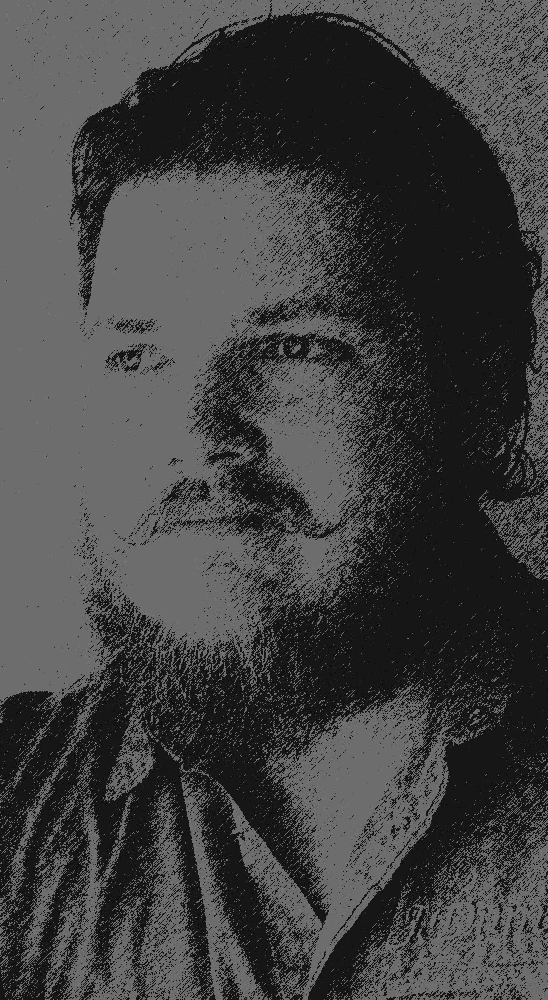

Satakunnan Ammattikorkeakoulu
 Vuonna 2017 Satakunnan Ammattikorkeakoulussa sähkö- ja automaatioinsinöörin opinnot IT painotuksella aloittanut rauhallinen kaveri joka omaa "Haluan oppia kaiken"-mentaliteettiä ja pientä taitelijan sielua, ei ehkä kuitenkaan siinä kärjistetyimmässä muodossa. Hassua myöskin on että vaikka opiskelenkin sähkö- ja automaatioinsinööri linjalla, en tiedä asiasta perusteita enempää eikä myöskään papereihini tule sähkö- ja automaatioinsinöörin nimikettä. Olenkin siis tuleva IT-insinööri sähkö- ja automaatioinsinööri linjalta. Niinpä, sekavaa.
Kolussa onkin siis tullut keskityttyä pakollisia kursseja lukuunottamatta vain IT-alan eri aspekteihin kuten ohjelmointi, tietokannat, linux, windows server, virtualisointi (VMWare), tietoverkot, data-analytiikka, peli suunnittelu. Kattavampaan käytyjen kurssien listaukseen pääset tästä.
Ennen koulua kävin "Tunnetta ja myrskyä kameralla ryhmä" nimisen kurssin Satakunnan Elävän Kuvan Keskus ry:ssä, lyhyemmin SEKK, joka oli TE-toimiston rahoittama hanke jossa tehtiin lyhytelokuva aina ryhmän kesken. Tämän jälkeen sainkin loistavan mahdollisuuden jäädä töihin ja siinä vierähtikin pari vuotta Satakunnan Elävän Kuvan Keskuksessa media-assistenttina. Työ oli monipuolista ja piti sisällään kuvausta, äänitystä, editointia, ohjausta, käsikirjoitusta, suunnittelua ja mitä kaikkea lyhytelokuvan tekemiseen alusta loppuun sitten ikinä tarvitseekaan. Olin myös mukana opettamassa uusia ryhmiä elokuvan saloihin sekä näyttämässä naamaani myös kameran edessä, vaikka se ei ollutkaan yhtään oma juttuni. Pidinkin enemmän suunnittelusta, ideoinnista ja varsinkin editointi oli mun juttu. Olin myöskin yhdistyksen ainut vähän enemmän tietokoneiden kanssa pelannut kaveri joten sain hoitaakseni myös yhdistyksen IT-ongelmat ja uudet hankinnat.
Kesällä 2019 sainkin oivan tilaisuuden tutustua hieman lähemmin mitä ohjelmistotyö on oikeassa elämässä kun pääsin Cimcorp Oy:lle ohjelmistotestaajaksi kesätöihin ja samalla tuli hoidettua harjoittelutkin. Työ koostui pääasiassa tehtaan käyttöjärjestelmän manuaalitestauksesta sekä raportoinnista. Mutta sain olla mukana päiväpalavereissa ja erilaisissa projekteissa. Tutuksi tulivatkin käsitteet kuten agile, scrum, jira sekä pieni kosketus progress kieleen.
Luet juuri sitä! Käytetyt kielet: HTML, CSS, SASS, JavaScript
Jo pidempään mietinnässä olleet omat portfolio-sivut saivat vihdoinkin kongretiaa kun kesäkurssina tuli käytyä JAMK:in Web-tekniikat kurssi.
Seuraava kehityksen aihe on tutkia bootstrappiä ja josko näistä saisi vielä nykyaikaisemmat.
Lue lisää!Oma kurssilla tehty portfolio sivusto, mutta tällä kertaa opiskeltu ja käytetty pääasiassa bootstrap-kirjastoa.
Odottaa vielä uutta värimaailmaa.
Lue lisää!Käyetyt teknologiat: .NET Core, SQL
Eräs satakuntalainen kunnanpoliitikko sanoi, että Luvialla sijaitseva Laitakarintie olisi vain ”hiljainen kylätie” ja todistaaksemme hänet vääräksi suunnitelmissa olisi rakentaa liikenteenlaskija. Tämä kyseinen projekti pitää sisällään laskijan UI:n
Lue lisää!Satakunnan Elävän Kuvan Keskus ry halusi uudet nettisivut pienellä sisällön hallinnalla. Oiva tilaisuus opetella WordPressiä
Lue lisää!Appissa varataan auto käyttöön jos tiedetään päivä ja kellonaika milloin sitä varmasti tarvitaan ja mahdollisesti kuinka kauan. Käytetyt teknologiat: .NET Core, SQL
Lue lisää!Tulossa
Lue lisää!C# WebScraper jolla voidaan hakea eri sivustoilta hakusanalla myynti-ilmoituksia
Lue lisää!Ehkä joskus
Lue lisää!